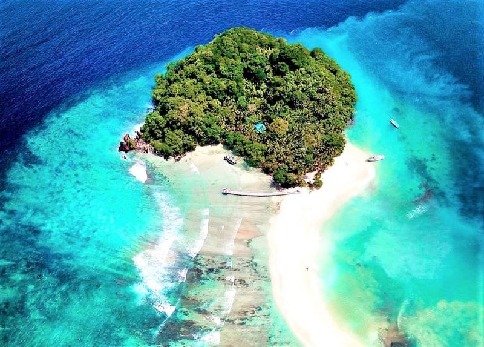

Tugas Ke-4
Nama Lengkap : fira aliah
NIM : 202055202088

Deskripsi :
Pulau Matan salah satu objek wisata bahari yang indah dalam gugusan kepulauan Salawati,Raja Ampat , Papua Barat yang kaya pesona.Pulau mungil ini memilih pantai berpasir putih,air laut yang jernih dan panaroma alam pulau yang menakjubkan. Pulau Matan merupakan sebuah area tak berpenghuni yang cantik dan menawan. Berada di ujung timur Indonesia, tepatnya di Kabupaten Raja Ampat. Memiliki ukuran yang terbilang kecil, diperkirakan membentang di atas lahan seluas 5.000 meter persegi saja. Meski demikian, pesona indahnya tidak bisa diabaikan, mampu memanjakan mata setiap pengunjung.